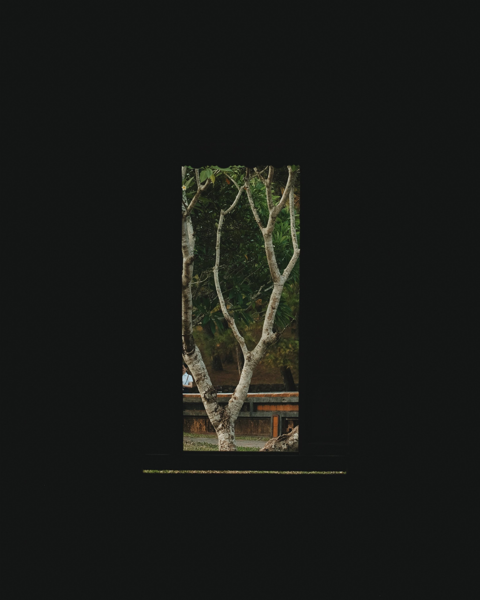

Những thứ linh tinh
Năm rồi mình không có cơ hội về Huế mùa hè, và nghĩ lại từ năm 2018 đến giờ, số lần về quê cũng chỉ đếm được trên đầu ngón tay (chân), năm nay tranh thủ xin nghỉ phép mấy ngày, về quê xử lý việc sức khoẻ, nhân tiện thăm nhà, thăm quê.
Ở tp.HCM lâu lâu nhớ quê, mình lại lên youtube xem một vài video về Huế, nghe Hò giã gạo, Nhã nhạc cung đình, hoặc đọc thêm vài thông tin liên quan đến quê nhà ~~. Lần này về quê, mình có hẹn một vài người bạn đi cafe nói chuyện, tự dưng lại nhận ra thêm vài chuyện mà trước giờ không để ý. :V, nhân tiện viết ra đây để lưu lại, cũng như chia sẻ với ai tình cờ đọc được.
Cách người Huế thuật lại câu chuyện
Một hôm đi cafe với 2 người em mình quen cũng đã lâu, 1 bạn thuật lại nhiều chuyện giữa bạn ấy với người khác, trong đó có nhiều dạng câu tường thuật, thì cứ mỗi lần vậy bạn ấy lại cứ như là 1 người khác với lời nói, biểu cảm khuôn mặt như người mà bạn ấy tường thuật vậy, rồi tự dưng mình nhớ lại, nhiều người xung quanh cũng đều thế mỗi khi kể lại các câu chuyện của họ. Mình không biết đây có phải là đặc điểm chung không, nhưng nó cũng xuất hiện nhiều mỗi khi mình được nghe chuyện được kể lại .
Kiểu người rất là Huế
Lại một lần đi cafe, dạo Đại nội với một người bạn, tự dưng mình có suy nghĩ bạn mình rất là Huế, kể ra, cảm nhận về một thành phố thì chắc phải sống, phải trải nghiệm đủ lâu mới có được. Mình trước năm 18 tuổi cũng không để ý gì cả, chỉ bắt đầu từ lúc có cảm giác sắp rời thành phố này để đi học đại học mới bắt đầu quan sát, cảm nhận nhiều hơn. Huế với mình cứ yên ả, thơ mộng, con người qua năm này tháng nọ vẫn thế, không thay đổi gì nhiều.
Cũng có thể do những cảm nhận từ bản thân đối với Huế, mình mới thấy bạn mình có một kiểu rất là Huế , đổi lại một người đến từ thành phố khác, hoặc cảm nhận về Huế khác mình thì chắc điều này cũng không còn đúng nữa.
Tôn Nữ
Nếu bạn đến Huế thì chắc hẳn cũng thấy rất nhiều người con gái mang họ Tôn Nữ, mình cũng có một người bạn như vậy, họ đầy đủ có lẽ là Công Huyền Tôn Nữ. Tìm hiểu thêm thì thấy đây là một cách để gọi các đời cháu gái của vua.
Nguyên thuỷ, họ này là Tông Nữ, từ tiếng Hán, tuy nhiên đến đời vua Thiệu Trị, chữ Tông trùng với tên Nguyễn Phúc Miên Tông nên bị phạm huý, đổi thành Tôn.
Công Tôn Nữ, Công Tằng Tôn Nữ, Công Huyền Tôn Nữ,... cụ thể:
Côngchỉ ra người con gái này thuộc dòng dõi phiên đế hệ nhà Nguyễn.Tôncho biết người này là cháu nội gái của vua, đời thứ 3.Tằngcho biết người này là chắt nội gái của vua, đời thứ 4.Huyềncho biết người này là chút nội gái của vua, đời thứ 5.
Về sau, người ta có khuynh hướng gọi bằng Tôn Nữ hoặc đổi về lại họ Nguyễn Phúc trên giấy tờ.
Mình xin trích 1 đoạn trong bài thơ Trong đôi mắt Huế của nhà thơ Đông Hồ, hình tượng về người con gái Huế nói chung và các cô Tôn Nữ nói riêng .
Dòng nước sông Hương chảy lặng lờ
Ngàn thông núi Ngự đứng như mơ
Gió câu vương áo nàng Tôn nữ
Quai lỏng nghiêng vành chiếc nón thơ.
Khiêm lăng
Một vài tấm ảnh mình chụp hôm vãng cảnh Khiêm lăng, nơi an nghỉ của vua Tự Đức.
